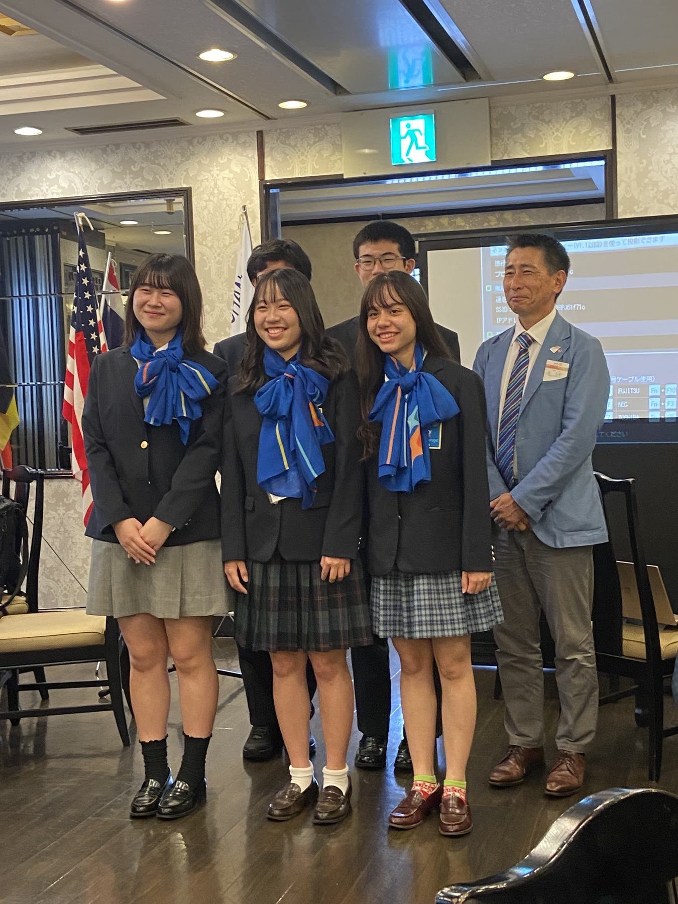
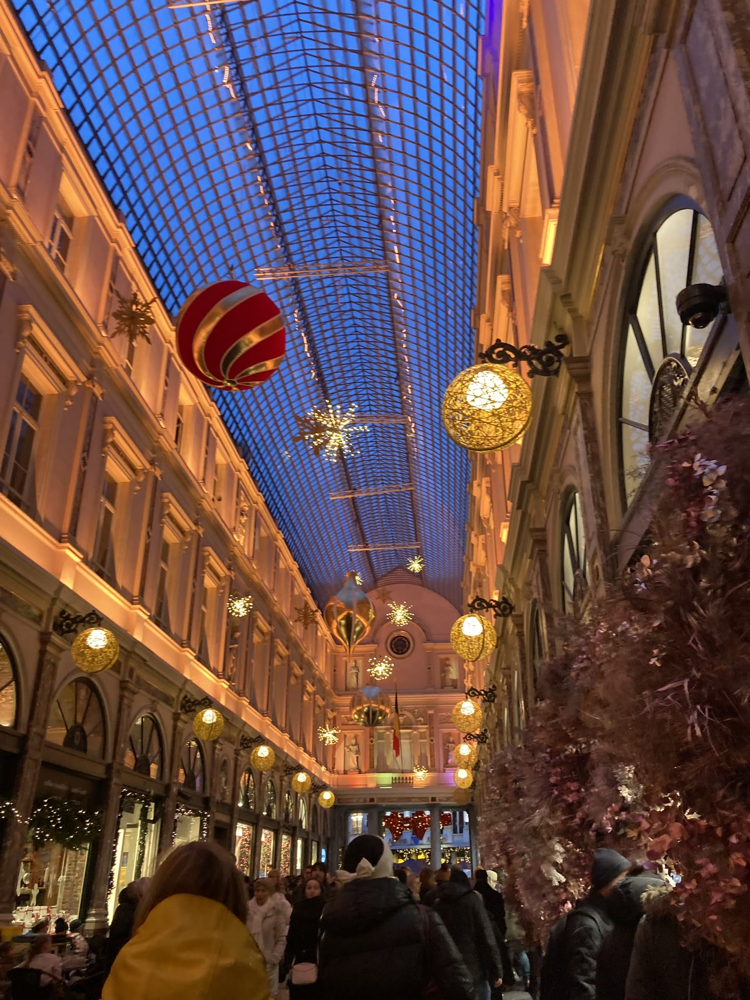
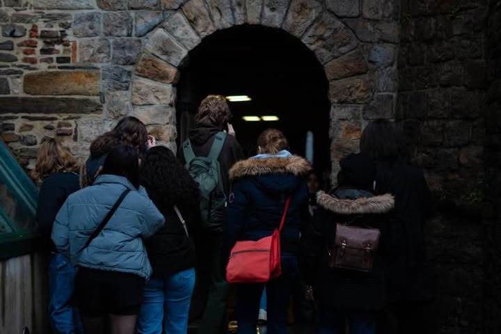
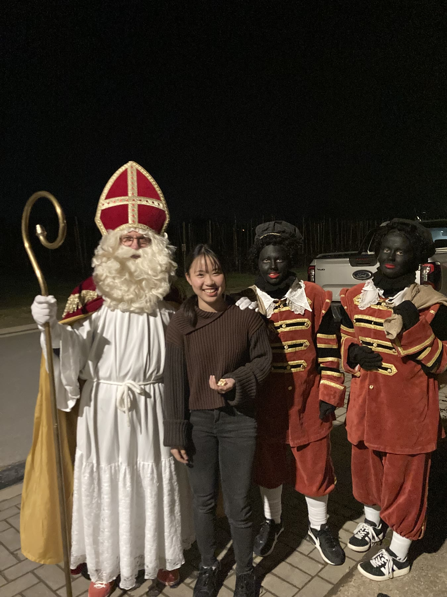
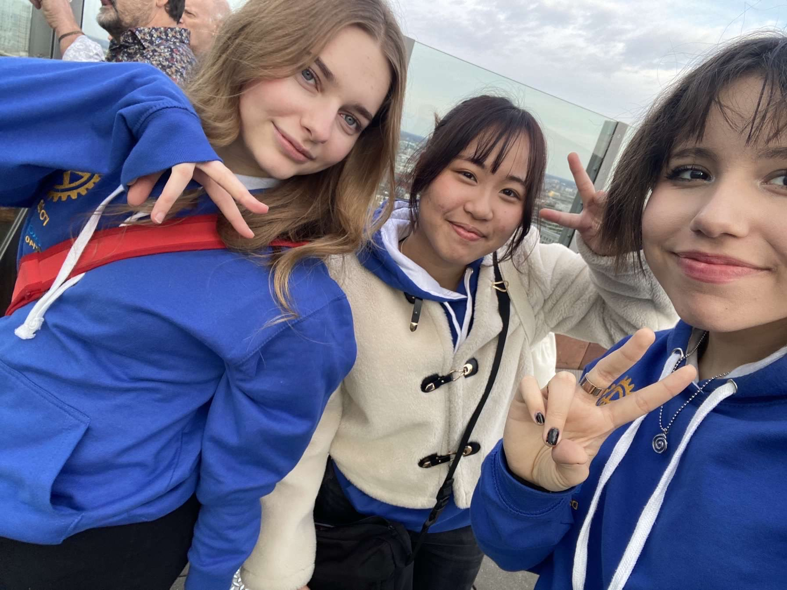
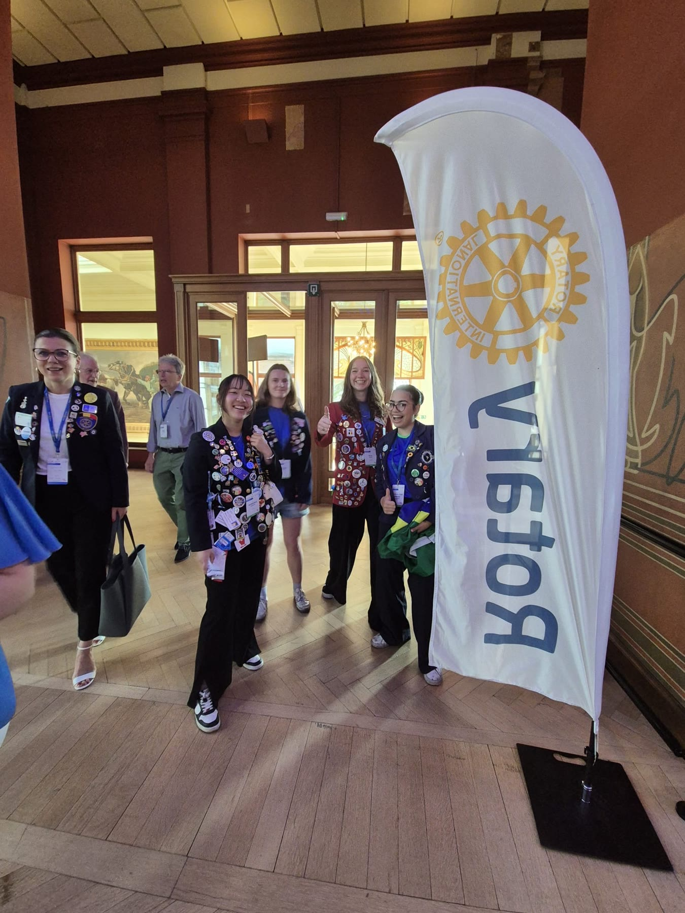
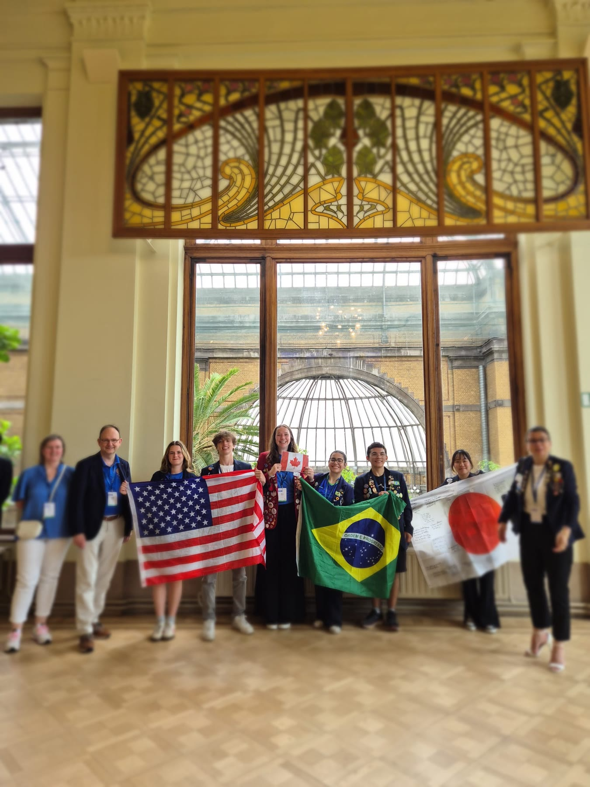
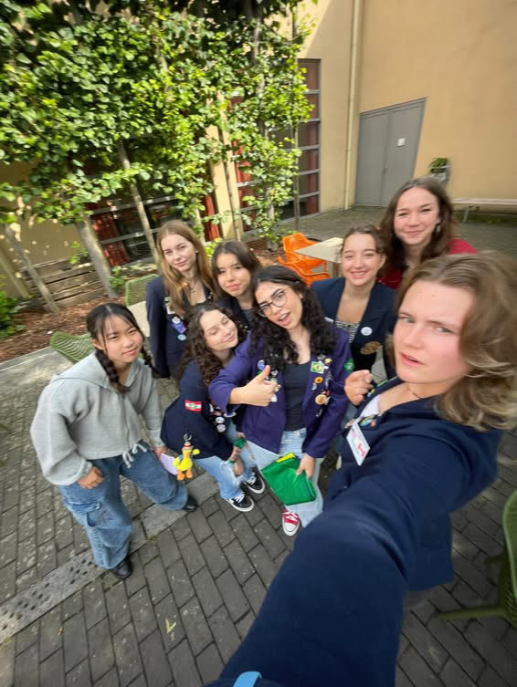
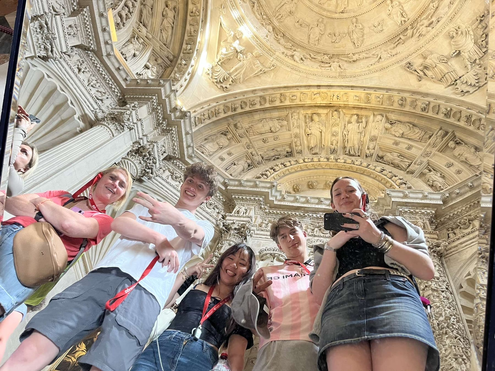

どうして留学に
行きたいと思った？
高校1年生で日本を離れると決めるまで。
A YEAR THAT CHANGED MY VIEW
高校生が、自分の言葉で語る1年間。
SCROLL TO EXPLORE ↓


楽しかったことも、
戸惑った日も。
01 / WHY THIS EVENT


2024年夏、高校1年生でももこはベルギーへ。言葉や学校、ホストファミリーとの暮らし。日本を離れた1年間で見たこと、感じたことを、記憶が薄れないうちに本人の言葉で振り返ります。
母・おちえから見た、送り出すまでのことや帰国後の変化もお話しします。留学に興味がある中高生も保護者も、気軽に話せる小さなおしゃべり会です。
02 / BEFORE & AFTER
高校1年生で日本を離れると決めるまで。
教室の外も含めて、毎日の中で感じたこと。
日本へ戻ってから気づいた自分の変化。
03 / PROGRAM



留学へ送り出すまで、母の立場から見えたこと。
学校生活、ホストファミリー、現地で過ごした1年間。
送り出した母と、帰ってきた娘。二人で振り返ります。
留学、学校、語学、日常生活。聞きたいことを自由にどうぞ。
COME AND TALK WITH US
親子での参加も、お一人での参加も歓迎です。


会場参加の方は、終了後17:00までお話しいただけます。